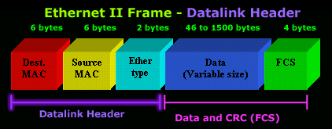

Chapter 5 - Ethernet
Ethernet Frame
Ethernet Encapsulation
Ethernet operate at
- data link layer (Ethernet defines protocols)
- physical layer (Ethernet defines technologies)
Bandwidth range is from 10 Mb/s up to 100 000 Mb/s
What does Ethernet rely on?
- LLC
- handles the communication between upper and lower layers
- typically between the networking software and the device hardware
- it is implemented in software
- MAC
- implemented by hardware (in computer NIC)
MAC Sublayer
Data encapsulation
The data encapsulation process includes frame assembly before transmission, and frame disassembly upon reception of a frame.
In forming the frame, the MAC layer adds a header and trailer to the network layer PDU.
- Frame delimiting
- the framing process provides important delimiters that are used to identify a group of bits that make up a frame
- these delimiting bits provide synchronization between the transmitting and receiving nodes.
- Addressing
- these delimiting bits provide synchronization between the transmitting and receiving nodes
- Error detection
- each frame contains a trailer used to detect any errors in transmission
- Media access control
- responsible for the placement of frames in the media and removal of frames form the media
- it controls access to the media
- communicates directly with the physical layer
Ethernet Frame Fields
This image shows fields of Ethernet Frame and their site.

LLC and MAC
| Hacker Characteristics |
MAC |
LLC |
| Controls the network interface card through software drivers. |
|
✅ |
| Works with the uuper layers to add applicatin information for delivery of data to higher to level protocols. |
|
✅ |
| Works with HW to support bandwidth requirements and checks errors in the bits sent and received. |
✅ |
|
| Controls access to the media through signaling and physical mediastandards requirements. |
✅ |
|
| Supports Ethernet technology by using CSMA/CD or CSMA/CA. |
✅ |
|
| Remains relatively independent of physical equipment. |
|
✅ |